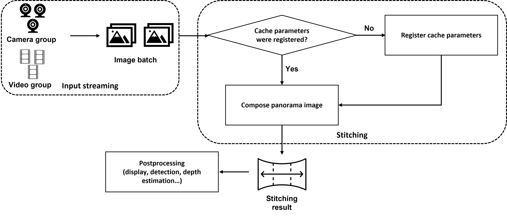
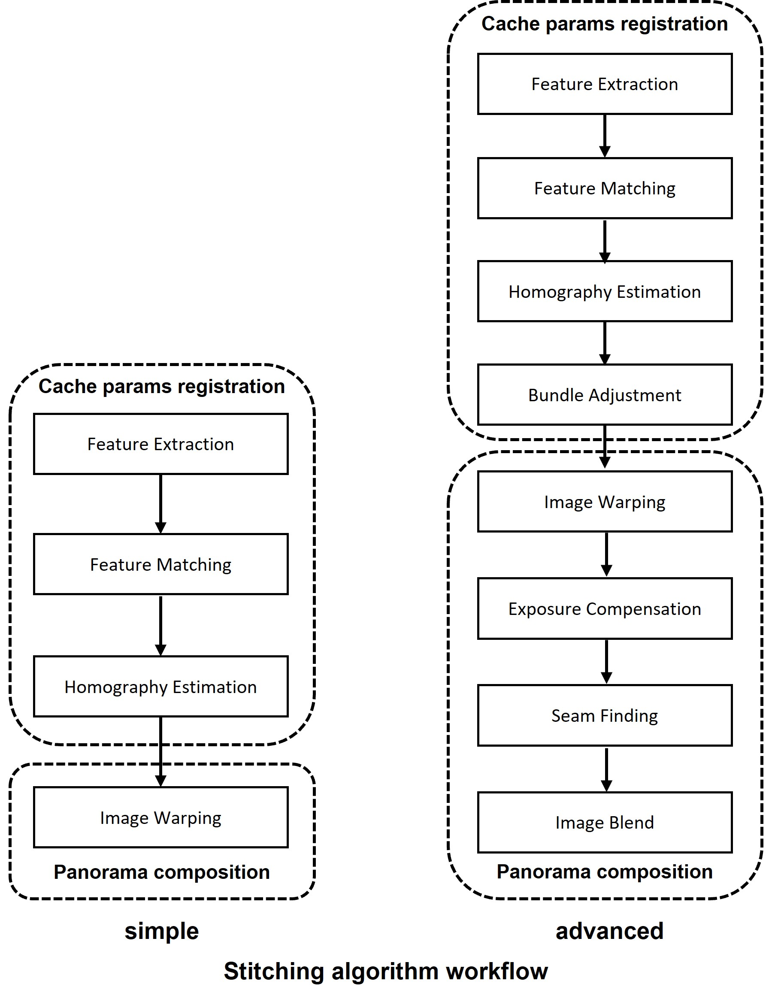
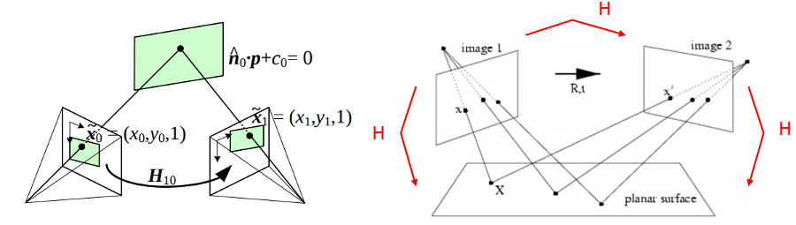
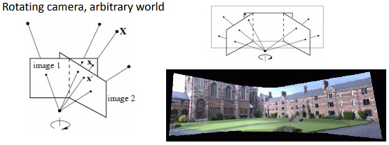
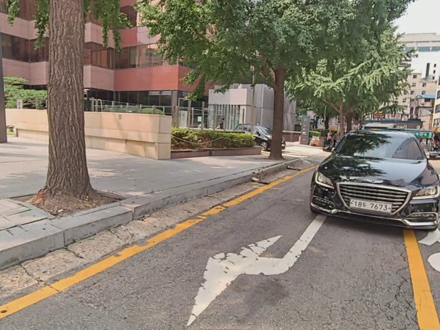
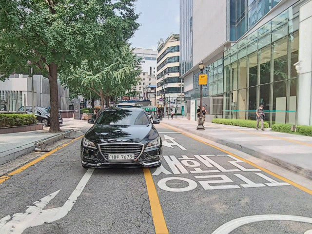
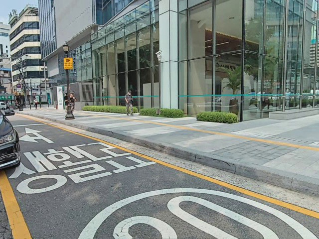
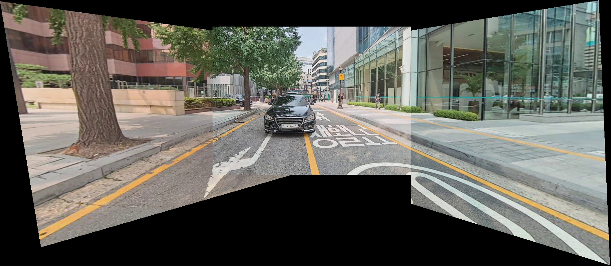
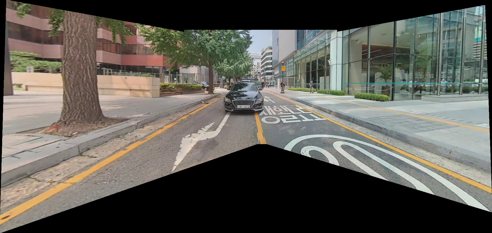

Introduction
A proof-of-concept that performs multi-camera real-time stitching applicable to an Advanced Driving Assistance System. I was the sole developer, handling research, implementation, and testing end to end.
Pipeline Overview
The stitching pipeline has three phases:
- Input streaming: capture frames from the camera/video sources and batch them as input for the stitching algorithm.
- Stitching: register the cache parameters needed for every camera to contribute to the estimate, then compose the panorama from the input batch and those cached parameters.
- Postprocessing: the resulting panorama feeds downstream tasks — display, detection, depth estimation, etc.

Stitching Algorithm
I implemented two stitching algorithms: a simple version with a lighter workflow, and an advanced version that trades higher processing latency for a smoother, more refined result.

Feature Extraction
Used to extract the feature list from each input image:
Feature Matching
Used to find matched features between each input pair, from which the homography matrix is estimated:
- Least squares method
- RANSAC-based robust method (default)
- Least-Median robust method
- PROSAC-based robust method
The homography matrix $H$ defines the transformation between two planes, up to a scale factor:
$H$ is a $3 \times 3$ matrix with 8 degrees of freedom, since it's estimated only up to scale — typically normalized with $h_{33} = 1$.
These three cases all relate a transformation between two planes:



Left → right: a planar surface and the image plane; a planar surface viewed by two camera positions (the stitching case); a camera rotating around its axis of projection — equivalent to points lying on a plane at infinity (smartphone panorama mode), the foundational case for image stitching.
Demo
Input — 3 cameras (left mirror, front, right mirror)



Simple-algorithm output

Advanced-algorithm output
